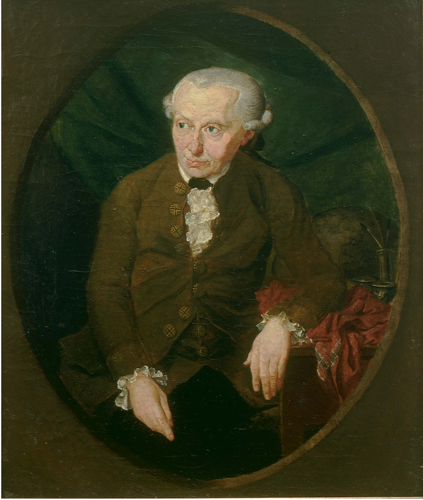
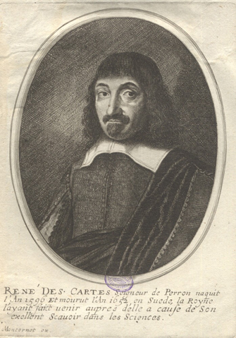
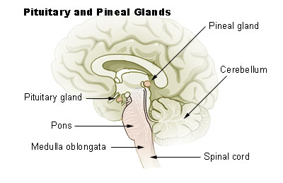
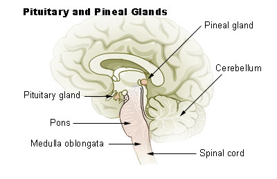
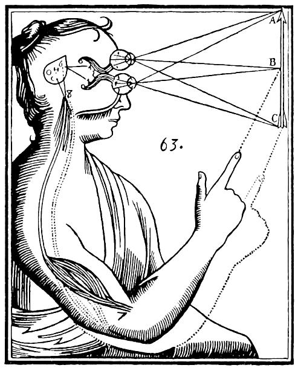
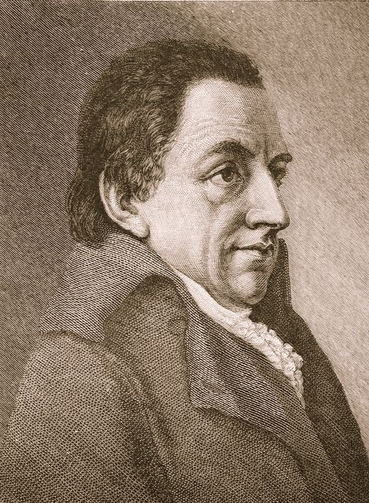

 В первом случае мы ищем духовное на физической основе, и терпим неудачи; во втором - мы сперва осознаем себя как духовных существ, и потом согласовываем свое новое состояние со своим человеческим опытом - и добываемся успехов.
Осознание себя в качестве духовного существа - это процесс, наполненный обширным содержанием. Это никогда не может быть эпизодичным, это непрерывное состояние, независимо от того, что бы с тобой не происходило в твоей жизни и мыслях. Чувство и понимание - я существую - когито - связано с любой моей мыслю, любым чувством, любым восприятием. Мы выросли и воспитывались в духе материализма, поэтому нам необходимо тяжело работать над собой. Существуют много точных путей, как это все можно сделать и согласовать.
В сущности это все является не чем иным, как перестройкой рефлексов, в основном условных. Поэтому в этой работе необходимо терпение и систематика. Систематика означает совершенно ясное понимание всего того, о чем тут ведется разговор. Очень важную роль тут играет понимание того, каким образом представляется возможным согласовать между собой противоречия между материальным и духовным бытием. Эти вопросы, в каком бы контексте они бы и не всплыли в сознании, никогда не должны создавать не малейшее смятение, всегда должны находиться в готовности полностью проработанные пути мысли и эмоций, каким образом любой подобного рода вопрос решается, таким образом не в малейшей мере в отрицательном виде не задевая настроение человека, и не в малейшей мере на влияя на его убеждение о себе как о духовном существе. Как до сих пор, так и впредь, я систематически старался и буду продолжать стараться отображать, как это все выглядит практически, и начертить план, как это все можно сделать, чтобы разработать в себе такие новые рефлексы, и, вместе с тем - создать в себе такую непоколебимую уверенность.
Итак повторяю - разговор не ведется о каких либо мистических и необыкновенных предметах, но всего лишь об элементарной (и не только) нейрофизиологии (в особенности о понимании и модификации условных рефлексов и принципа доминанты). Есть смысл это в какой то степени освоить, потому что это нам будет служить в качесте такого как своеобразного языка, который является очень выгодным из за своей конкретности и научности (в отличие от языка эзотерики, и в большой мере также психологии, которым в какой то мере не достает такой экзактной конкретности).
 Декарт считал, что отдельно существует мир вещей и мир мыслей (который является превалирующим), и что той точкой, где оба эти мира соединяются, является человеческий мозг, конкретно - шишкообразная железа, которая находится в самой середине мозга. Больше про указанное им место перехода между этиими двумя совершенно противоположными средами природы, тем более, о самом этом процессе, он ничего сказать не мог, как единственно то, что это все каким то образом осуществляет властвующая над нами всемогущественная сила. И после Декарта никто об этом предмете ничего больше не сказал, и так это и есть до наших дней.
 
Эпифиз мозга (epiphysis cerebri, или corpus pineale — шишковидное тело) представляет из себя неболшое образование, которое у позвоночных животных находится под кожей черепа или в глубине головного мозга.но функционирует как орган, способный воспринять свет, или как железо внутренней секреции, активность которого зависит от освещения.У некоторых позвоночных животных эпифиз выполняет обе эти функции. У человека ее форма напоминает шишку, от чего и происходит название - эпифиз (греческий: epiphysis - шишка, нарост). Эпифиз довольно большой у детей, а в подростковом возрасте оно умкньшается (Wikipedia).

Эпифиз мозга (epiphysis cerebri, или corpus pineale — шишковидное тело) представляет из себя неболшое образование, которое у позвоночных животных находится под кожей черепа или в глубине головного мозга.но функционирует как орган, способный воспринять свет, или как железо внутренней секреции, активность которого зависит от освещения.У некоторых позвоночных животных эпифиз выполняет обе эти функции. У человека ее форма напоминает шишку, от чего и происходит название - эпифиз (греческий: epiphysis - шишка, нарост). Эпифиз довольно большой у детей, а в подростковом возрасте оно умкньшается (Wikipedia).
 Diagram of the operation of the pineal gland for Descartes in the Treaty of Man (figure published in the edition of 1664)
Если смотреть с материалистической точки отсчета (как в реальности поступал и Декарт), то там ничего дельного предпринять не представляется возможным (по крайней мере так это было до сих пор). Если смотреть с точки отсчета представителей классического субъективного идеализма, то для себя они этот вопрос решают, как в уме, так и в чувствах, и при этом они вовсе не отрицают физическую, так очень привычную нам реальность мира. И все же - настоящий представитель нашей повседневной жизни, или, тем более, настоящий представитель экзактных наук - физик или биолог - всеровно не будет готов принять это идеалистическое представление о мире. И это естественная позиция, потому что научное мировоззрение одновременно является материалистическим мировоззрением. И ведь именно такая строгая позиция привела к таким великим успехам и достижениям, что затеняет любые прихоти и игры настроений идеалистов. И все же, несмотря на все эти успехи, духовный путь для этого научного - физического, биологического, а также и нейрофизиологического пути (в его нынешнем виде) познания мира и истины является закрытым, тупиковым. Даже старания смягчить состояние путем различных компромиссов, например, различных эзотерических проделок, по крайней мере до нынешнего времени не привели не к дополнительным успехам в материальном плане, не в духовном, не содействовали преодолению начертанного еще Декартом основного дуалистического противоречия (примирению полярностей дуализма) - только запутали до того достаточно ясную, четко и честно нарисованную картину.
Несмотря на такие очевидные трудности, я хочу показать, что такая возможность все таки существует. И естественно, что ее не следует искать в каком то компромисе между этими двумя полярностями, провозглашенными Декартом. Так что - попробуем обойтись без -исмов, и без попыток заткнуть рот собеседнику или оппоненту какими то догмами.
Итак - раз уж мы (я, мое сознание, когито) находимся в глубине мозга, в середине, так что же это значит? Представим это чисто практически. Этот мозг ведь не являектся каким то абстрактным мозгом. Нет это конкретный мозг каждого из нас. Ну ладно - допустим, что есть так, как это представлял себе Декарт: мы каждый находимся в своем эпифизе - в какой то конорке, в которой мы получаем изображение окружающего мира. Каким образом он нам дан - в каком то чемоданчике, или как? Наверное, все же не в готовом виде. Ведь Кант же открыл, что этому, преподнесеному нам образу мира только мы каждый сам присоединяем понятия времени и пространства. Ну, это нормально - вы скажете, это как в телевизоре или в компьютере. У нас у каждого есть свой мозг - свой компьютер, который получает извне шифрованую информацию в виде бесконечно меняющейся последовательности ноликов и единиц. Ну и этот компьютер так специально устроен, что он этот ряд информации преобразует в понятные нам образы - картинку на экране - полную смысла, цветов, изменчивую, и эта картинка нам в полной мере имитирует реальный ход жизненных событий - в такой большой степени, что мы можем полностью забыться - забыть, что мы смотрим последовательность ноликов и единиц, а не жвем жизнь. У нас есть эмоции, переживания, слезы и восторг. И это даже независимо от того, что мы в принципе то понимаем - мы на самом деле утилизируем ряд единиц и ноликов.
Ну - если это на самом деле так происходит с нами, и наше я и наш мозг в этой драме занимает лишь роль такого жестко запрограммированного компьютера или телевизора - тогда что же они стоят - пусть только функционирует, а если что и поломается - тогда просто надо починить. Но так ли это, так ли это представлял себе Кант? Так как же все таки есть с этим сериалом - ведь во втором конце провода его кто то реально играет, или по крайней мере это запись такой реальной игры? Если так, тогда эти нолики и единицы являются просто способом переноса и передачи этой объективной информации, и это мы все давно знаем - это относится к элементарному курсу нейрофизиологии и передачи информации.
И тогда мы думаем так. Наши нервы ведь функционируют как такие электрические провода (хотя немного технически и отличаются). Также как кабель телевизора или эфир, или провод телефона. И вне нас, вокруг нас существует реальный мир - эта реальная студия, в которой кто то танцует и поет. И я ведь с таким же успехом мог бы находиться там - в этой студии, и все наблюдать и воспринимать прямо. Хотя по правде и тогда ведь тоже было бы то же самое кодирование - я бы всеровно в своем мозгу и тогда получал бы такой же ряд меняющихся единиц и ноликов, только промежуточных этапов просто было бы меньше. Всеровно глаз преобразил бы эту картину в электрические сигналы, которые по нервным путям попали бы в мозг. А там как будто сидит мое я - в той самой шишковидной железе, в каком то удобном кресле, и наблюдает всю эту картину (которую из этих единиц и ноликов сконструировал мой собственный мозг) - все это пение и все эти пляски. Как бы странно это не показалось с непривычки, надо все же еще и еще раз признать, что это - элементарный курс нейрофизиологии, курс технологий кодирования и передачи информации.
Но так ли это просто и примитивно? И все же. Как то странно получается - я сижу с своей шишковидной железе, и опять все это воспринимаю, и так далее... Ну прямо как в этой песенке - у попа была собака... Словом, после всей этой длинной и умной речи, которую можно было бы растянуь в длину нескольких книг, мы находимся там же, где были в начале - мы ничего не понимаем о восприятии окружающего мира по сути. Нас не в малейшей мере не интересует, и мы и не должны ничего знать о строении телевизора, чтобы смотреть сериалы и доставлять себе переживания, почти реальные, почти как в жизни. Мы ничего не должны знать о своем мозге и нервной системе, чтобы жить жизнь, радоваться и печалиться, философствовать и наслаждаться искусством. И отстань ты от меня со всеми своими теориями, сгинь!
Но, все же, так ли все это на самом деле? Нет, нет - не так это всетаки. Мозг человека - это первый слой, который для этого человека, который смотрит с позиций, с точки отсчета от своего я, своего центра, формирует для него мир. В конце концов, в итоге мы реально имеем один, и только один мир - тот самый, который наш мозг в итоге очень сложных манипуляций, с использованием внешних сигналов (каких то кодовых знаков, или чего то подобного, о чем у нас почти что нет никакого представления) синтезировал для нас; и которым пользуется, восхищается, сотрудничает, взаимодействует наш я, наша личность. Получается просто - внешний мир, который каждый из нас имеет в своем пользовании, хоть и в большинстве своих проявлений одинаков для нас всех, все же имеет и очень большие индивидуальные свойства. И они то и зависят от того, какие наши качества - в основном свойства характера, желания. Мир для всех одинаков в этой своей одинаковой части, не потому, что он такой есть, и все. Нет - это так потому, что у нас у всех подавляющее большинство свойств одинаковы. Это физические свойства у нас одинаковы, одинаковы они и у многих животных, которые живут вмемте с нами, в одном и том же мире. А мысли у нас могут очень отличаться, также как черты характера, мечты. чаяния. И не надо умирать, не надо мечтать о других мирах, мы их заимеем моментально, здесь же, на месте, мигом - как только меняются наши души.
Нейрофизиологически это выражается очень просто, понятно и повседневно. Например, если у нас в мозгу имеются очаги доминанты (такое нейрофизиологическое понятие, классический термин), тогда наш взгляд на свой экран объязательным образом зацепится в них, и мы просто не увидим сквозь них картину на экране, и все те глубчайшие (дальнейшие) слои информации так и не поступят в сознание, и останутся недостигнутыми. Наш поток сознания будет работать под диктантом наших же собственных доминант. В повседневном понимании и речи это все обозначается одним понятием - это эгоизм. И во многих отношениях мы почувствуем мир таким, какими мы являемся сами. Не зря говорят, что каждый о другом судит по себе - на самом деле в большинстве случаев именно так это и происходит. Самую основную картину - предметы, события - все видят примерно одинаково, но там, где речь идет о деталях, и тем более - об оценке и суждениях - вот там то очень многое от каждого самого и зависит. Мы как будто здесь не сталкиваемся не с чем новым, это все та же самая древняя истина - каждый видит мир своими глазами, и чтобы там что то изменить, изменять надо самому себя. Ну что - можем только радоваться, что эта точка зрения в лишний раз демонстрирует свою правдивость и стабильность.
Но мы здесь пробуем подойти очень скромно и нежно. По правде же эта картина намного более резко выражена - мы на самом деле каждый создаем этот свой мир, создаем каждый миг, а не только механически его воспринимаем. Это кажется невероятным, но серьезно обдумывая, и объединяя в одно все очевидные аргументы, так то оно и получается. Просто мы это не чувствуем, потому что пользуемся (как компьютер) разными "cookies", следовательно разработали в себе, в своей нервной системе тысячи и даже миллионы рефлексов, который нам уже с мельчайших намеков создают готовое представление (и мнение). И эти "cookies" в основном нам показывают наш же хорошо отработанный комплекс наших собственных взглядов, мнений, представлений - значит нас самых, наши свойства, наши черты характера (субъективный мир), а не реальный внешний (объективный) мир. Это как паутина, в которой какой то паук запутал, инкапсулировал нас. И все же - никакой не паук - мы сами каждый себя в этой паутине инкапсулировали. В нашей капсуле осталось лишь несколько отверстий, через которые туда поступает маленькая, минимальная долька великого внешнего света (жизни), которая абсолютно необходима, чтобы не погасла свечка нашей хилой жизни, всецело запутанная в этой паутине нашего эгоизма. И больше силы мы не получаем, потому что сами замуровали все двери и все окна - все пути, по которым к нам может поступить поток настоящей, великой жизни, которую нам по идее нужно распознать, и с которой мы должны всяческими путями взаимодействовать и сотрудничать.
Так что наш мозг в этом деле играет очень большую роль. Не будем здесь говорить о каких бы то небыло болезнях мозга - это является сферой действия соответствующих специалистов. И поэтому не будем говорить о том, как эти болезни влияют на восприятие мира человеком, мы знаем, что это влияние может быть выражено в огромной мере, об этом наверно же никто не сомневается. Я говорю о том диапазоне, который причисляется полностью нормальному сознанию и которому соответствует совершенно нормальное функционирование мозга, и в которую не требуется, и даже недопустимо чужое вмешательство, включая вмешательство со стороны различных специалистов, и тем более, разных ложных "специалистов". Про ту сферу, которая является в такой степени интимной, охраняемой, и находится в самоуправлении исключительно самой личности, и за которую каждый и несет ответственность, главным образом сам перед собой. Во всяком случае, однозначным является то, что эта своя личность, этот эго, в самом центре которого мы каждый находимся, является многослойным. И самый глубокий слой, который находится ближе всего к этой самой центральной точке, это есть просто то, что мы в своей повседневной жизни воспринимаем и понимаем как наш собственный мозг со всей своей нервной системой. И только направляя свой внутренний взор насквозь этого полупрозрачного слоя, стрелы испытывающего взора, выпущенные этим самым глубинным Я, самой глубинной и интимной нашей сущностью, достигают следующего, уже более периферического слоя. Это есть то место, та арена, где я встречается с тем, что уже нельзя обозначать как Я - с единственной возможной единой и единственной сущностю, с которым я кроме себя может иметь, должен иметь и реально ежесекундно имеет дела. Если мы это назовем ИСТИНОЙ, то это очень облегчит нашу философию и практически все расставит по своим местам. И сразу станет ясно следующее. Эгоизм закрывает путь к истине. У человека существует нистинкт истины, а это значит, что в каждом человеке глубоко скрыта программа, стремление к истине. Но она скрыта от него. И для того, чтобы понять, что его беспокоит, бесит, загоняет в стресс, даже в болезни, для этого он должен побороть свой эгоизм. Но побороть эгоизм не значит расставаться и отказаться от своего Я. Это надо понять совсем по другому. Просто говоря, это значит - стать правдивым, истинным самому. Просто истина станосится все большей и болшьшей составной частью человека. И он становится поистине мудрым человеком, хорошим человеком. А человек, который отвергает путь истины - эгоист, и, по определению - нехороший человек. По определению - эгоист и хороший человек - понятия несовместимые. Где же граница между моим Я и истиной вне меня? На границе с той сферой, которая находится вне достижения моей воли. Совершенно очевидно, что оно реально существует.
И значит - этот следующий слой - это слой моей работы, моих усилий, моей настоящей и единственной жизни. Это слой, за счет которого, в процессе взаимодействия с которым, я, во первых, вообще существую, вообще живу. И. во вторых - во взаимодействии с которым я могу бесконечно рости и развиваться - развиваться по образу и подобию истины, становиться и самому истиным, а не каким то эгоистическим и самодовольным призраком.
И дальше к периферии уже последняя бесконечная сфера - это чистое, мне совершенно неизвестное, почти совсем не понятное, совсем не дающее возможность вчувствования сфера. Сфера, которую я виже и понимаю только в строгом соответствии своей личности, своим свойствам, своим прежним и нынешним усилиям и чаяниям. Но это бесконечный потенциал, та бесконечная истина, который единственный и мобилизует все мое любопытство, мой интерес, направляет ось моей жизни и поддерживает пламя моей жизни. Это мое потенциальное будущее! Это то, чем я в принципе могу стать, что я в принципе когда то может быть все таки смогу понять, прочувствовать, смогу осуществить как себя, как свое я, как свою жизнь.
Обо всем этом я много говорил в других местах. То, на что я хочу твердо и серезно ставить ударение сейчас - это есть вот этот первый круг, который обнимает наше я как точку - наши глубочайшие структуры, в которых наш мозг и нервная система играет если и не явно главную, то без малейшего сомнения - очень серьезную и практически значимую роль. Это не нейроцентризм, не биоцентризм, потому, что в центре находится эта единственная точка я каждого человека. Но первый и наиважнейший слой, окутывающий эту единственную точку - это без всякого сомнения.
Еще добавлю для простоты - эти очаги доминанты, насквозь которых не видно, в своей основе связаны с идеей эгоизма - я все знаю, я знаю лучше, чем любой другой, я самый большой, самый умный, самый глупый, самый-, самый-, самый... Насквозь этого взор чистого я не может пройти, в этом он застревает. Стрелы сознания и поиска, отправляемые глубочайшей точкой я, встречают в своем пути эти инкапсулированные крепости, и застревают в них, или ломаются от такого удара. Только редкая случайно поподает в какую либо щель и прорываются вовне - в свободное пространство, в чистый воздух.
Для размышления... Следовательно, подумаем серьезно - а все же, что это дает, что ты добавляешь к внешней информации пространство и время (Кант)? Неужели ты поэтому можешь считать, что ты, хоть в ограниченном виде учавствуешь в создании образа внешнего мира в себе? Но подумай - зависит ли это от твоего свободного выбора - добавить или не добавить это понятие пространства и времени, мог бы ты, например, не добавить их, если вдруг не захотел этого делать. Или прибавить именно такое время, а не какое то другое. Если вот это было бы в твоей власти, тогда ты мог гордо сказать - да, я так делаю, я выбрал такой путь. А так - любая букашка так делает, у каждого насекомого также самое, в его сознании скорее всего тоже формируется какое то понятие пространства и какое то понятие времени (или какие то другие ориентиры). Это не дает ей повод для гордости, для эгоизма. Если это по настоящему стояло в твоей власти, тогда да - ты мог сказаь - я это делаю. А пока - со мной это делается, со мной это что то или кто то делает. Странно получается - на самом деле, вне тебя вроде бы этот мир не существует, ты его создаешь. Но не по своей свободной воле. Так ты кто - за веревочку дергаемая кукла, или как? Мысль Канта огромной величины, но такой вопрос все же остается...
Единственное, что мы смело можем утвердить: мир не такой, каким он кажется с первого взгляда - внешний и готовый - вот такой! Мир другой. Какой, и как он образовывается, мы почти что ничего об этом не знаем. Но совершенно определенно можем сказать следующее - все это имеет какое то весьма серьезное отношение к каждому из нас.
 Ну хорошо - но это так в том, что касается самой основы мира, его материальных законов и предметов. Там мы на самом деле знаем очень мало, знаем только само явление, а не ее суть. Но в то же время - есть очень много что такое, что мы на самом деле сами образовываем. Конечно - это та сфера, которую мы называем этикой, духовными принципами. Эта сфера на самом деле отдана в нашу власть. Здесь основную роль играет наш выбор, качество нашей свободной воли. Это целый огромный мир, который расположен во вышеупомянутой второй зоне, окутывающей мое чистое, мое трансцендентальное я. Там, где происходит встреча моего я с тем, что он ясно и четко идентифицирует как не -я. Там, гда происходит взаимодействие этих двух первоначал. Со стороны не-я дан этот механизм, который дает возможность убедиться мне самому, а также убедить в этом других, что именно здесь для каждого человека формируется мир. И он никогда не готов. Он заново формируется каждое мгновение, формируется не во мне (как утверждают субъективные идеалисты (Беркли, Юм) и трансцендентальные идеалисты (Кант), а именно на этом небольшом поле, где перекрываются сферы интереса я и не-я (не-я - термин, впервые предложенный Фихте). И в этой общей зоне есть регионы, котрые расположены ближе ко мне, моему я, и регионы, расположенные ближе к сути моего великого партнера - не я. Мой мир создается только совместными усилиями, как дверь сейфа, которую можно открыть, только одновременно поворачивая два ключа. И хотя мои ресурсы пока что очень малы, а силы партнера бесконечны, но без того ключа, который поручен исключительно мне, новый мир во мне не открывается никак. Этот ключ - моя воля. Здесь уместно напомнить одно место из Старого Завета - в вольном пересказе - Сделаем человека, Адам, вместе, мы оба ты и Я. Именно так - весь мир и весь я формируется именно там - в этой второй зоне.